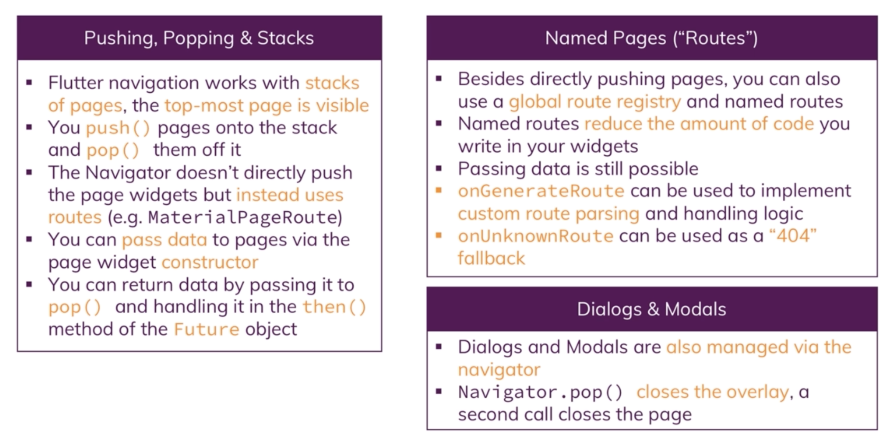

Navigation
Navigator Navigation in Flutter, pages are managed as stack, last in first out. The last pushed in page is visible.
Navigator.push(context, MaterialPageRoute(builder:(BuildContext)=> NewPage()))
Navigator.push().then(value) will listen to value once the Navigator.pop(context,value) passed a value.
- When former page use
push, the latter page will have back button on its Appbar. Use WidgetWillPopScopeto use back button in the appBar. - When former page use
pushReplacement, the former page is destroyed from the stack.
Navigation between Stacks:
Switch between different stacks can cause info loss on the page.
Tabs:
Wrap Scaffold with DefaultTabController, add TapBar(tabs:[]) in AppBar(bottom:). Next, create TabBarView(children:[]) in body and rendering pages(tab pages are embedded, there will not be a scaffold).
Routes:
- Named Routes(routes)
- onGenerateRoute
- onUnknownRoute
in
MaterialApp, add
routes: {
'/admin': (BuildContext context) => ProductsAdminPage(),
'/': (BuildContext context) => ProductsPage(_products,_addProduct,_deleteProduct),
},
onGenerateRoute: (RouteSettings settings) {
final List<String> pathElements = settings.name.split('/');
if (pathElements[0] != '') {
return null;
}
if (pathElements[1] == 'product') {
final int index = int.parse(pathElements[2]);
return MaterialPageRoute(
builder: (BuildContext context) =>
ProductPage(_products[index]['image'], _products[index]['title']),
);
}
return null;
}
Alert
showDialog
showDialog(
context: context,
builder: (BuildContext context) {
return AlertDialog(
title: Text('R U SURE'),
content: Text('this action cannot be undone'),
actions: <Widget>[
FlatButton(
child: Text('DISCARD'),
onPressed: () {
Navigator.pop(context);
},
),
FlatButton(
child: Text('CONTINUE'),
onPressed: () {
Navigator.pop(context);
Navigator.pop(context, true);
},
)
],
);
});
Modal
showModalBottomSheet
